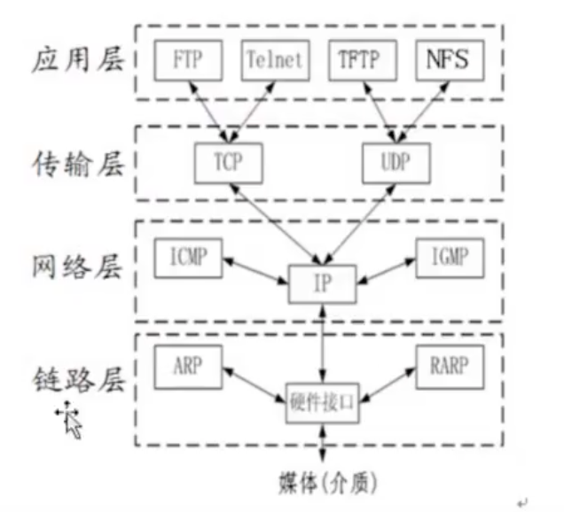
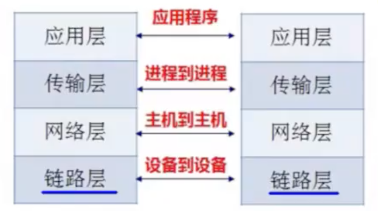
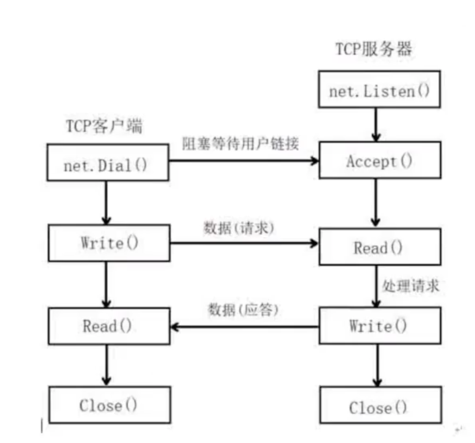
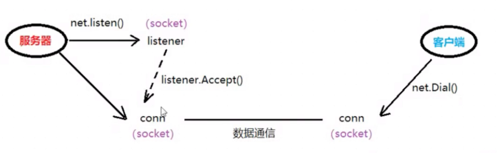
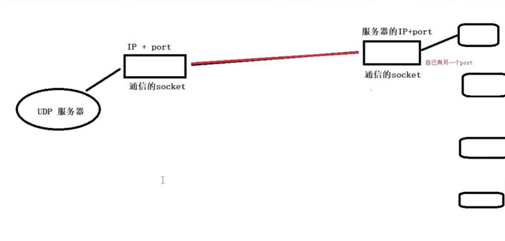

1. io
1.1 写文件
按字符串写
WriteString
1 | func main(){ |
按位置写
writeAt
1 | // Seek() // 文件位置指针 |
1.2 读文件
按行读
1 | func main(){ |
1 | // 全部读取 |
1.3 缓冲区
磁盘构成
- 振臂
- 磁头
- 磁道
- 扇区 一个扇区512B，数据在磁盘存储时至少要占据一个扇区。
磁盘读取是物理操作，物理操作取决于硬件的性能。考虑到物理操作性能开销明显，所以需要进行性能优化。便有了缓冲区。
一次性尽可能多的奖磁盘上的内容读取到当前内存中，比如需要一行文件。但是缓冲区真正从磁盘上读取的时候。它不止拿了一行。而是尽可能的奖当前扇区里面的数据都读取过来。因为读一行和把当前扇区读完，对于磁头来说，都是一次物理操作。
一个场景，当读取一行之后，还需要继续读。那么这个时候，就可以直接从缓冲区中读取了，而不需要再次让磁盘执行物理操作读取。而从内存中读取数据是电子操作（电子操作访问速度接近光速，比物理操作快得多）
缓冲区 “预读入，缓输出”
往磁盘上写数据的时候，大多情况下是先写到缓冲区中了。等待缓冲区满，由操作系统批量一次性刷到磁盘当中。
1.4 32位与64位内存地址
32位 最大内存地址 2^32 4GB（进程空间）
64位 最大内存地址 2^64 比较大
2. 协议
2.1 概述
协议，就是双方约定好的一份的合同，在数据传输层面来说。如果要传输一个文件。我们必然需要来分析一下文件的特征。
对于发送端来说，我要怎么确保我发出去的东西，接收端能拿到并且拿到的东西是对的；一 文件不能串台，二，文件不能有丢失；
那最早的传输协议雏形，首先发过去文件名，其次发过去这个文件有多大，最后将文件内容拆包分发。
对应的在接收端，就知道这个文件的名称和容量的，当接收完毕之后。要校验一下文件名是否对的上的，文件大小是否对的上啊。这就是最早的FTP协议雏形
后续，随着需要越来越复杂，文件的类型也越来越多，文件体积越来越大。到这个时候，聪明的人类不断地升华这份合同，如果尽可能简单的去把问题高效解决了一直促进着计算机网络的发展；
2.2 典型协议
传输层 TCP/UDP
应用层 HTTP/FTP
网络层 IP ICMP IGMP
网络接口层 ARP RARP
TCP 传输控制协议，是一种面向连接的，可靠的，基于字节流的传输层通信协议
UDP 用户数据报协议 是OSI参考模型中一种无连接的传输层协议，提供面向事务的简单不可靠信息传送信息
HTTP超文本传输协议
FTP 文件传输协议
IP协议
ICMP internet控制报文协议，它是TCP/IP协议族的一个子协议，用于在IP主机、路由器之间传递控制器之间
IGMP internet组管理协议，是internet协议族中的一个组播协议，该协议运行在主机和组播路由器之间
ARP 协议是正向地址解析协议，通知已知IP，寻找对应主机的MAC地址。
RARP 是反向地址转换协议，通过MAC地址确定IP地址
2.3 分层模型
每一层利用下一层提供的服务来为上一层提供服务，本层服务的实现细节对上层屏蔽
| OSI/RM(理论上的标准) | TCP/IP（事实上的标准） |
|---|---|
| 应用层 | 应用层 |
| 表示层 | 应用层 |
| 会话层 | 应用层 |
| 传输层 | 传输层 |
| 网络层 | 网络层 |
| 数据链路层 | 链路层 |
| 物理层 | 链路层 |
2.4 层与协议

各层功能

网络层 -> ip
传输层 -> port
2.5 传输过程，
将一条字符串从一台主机发往另外一台主机
2.5.1 链路层
两台主机传输数据，需要硬件支持，主机上得有网卡，软件得有网卡驱动。网卡对应的就是ARP协议
网卡身份证（全球唯一）：MAC地址；数据包的物理发送地址和物理接收地址
ARP协议：借助IP地址获得MAC地址；
RARP协议： 借助MAC地址获得IP地址；
2.5.2 网络层
网络层的作用是引进一套新地址，能够区分不同计算机是否属于同一个子网络。这套地址就叫做“网络地址”，就是平时说的IP地址；
网络地址帮助确定计算机所在的子网络，MAC地址则将数据包送到该子网络中的目标网卡。
IP协议： 在网络环境中唯一标识一台主机；
IP地址本质： 2进制数——点分十进制 IP地址
2.5.3 传输层
TCP/UDP协议
封装port——在一台主机上唯一标识的进程；
2.5.4 应用层
截止到应用层，通过链路层确定MAC地址，通过网络层确定IP地址，通过传输层由PORT定位到进程。至此目标主机确定下来了；
接下来开始传输实际的数据了，当然不会赤裸裸的将 字符串 丢网上，前面说了，发送端得确保接收端确实拿对并拿全了这个数据包才行；就便有了应用层的协议；
比如http协议，有文件名，文件MIME，请求体，请求状态等等等等；
2.5.5 数据包封装的过程
自上向下
待发送的原理数据
应用层
传输层 ——TCP/UDP， 确定PORT 标识主机上一个进程
网络层——IP 网络地址—— 唯一标识网络的一台主机
链路层——ARP 获取MAC地址
用户层
应用层
kernel层
传输层
网络层
链路层
封装：应用层——传输层——网络层——链路层
解封装： 链路层——网络层——传输层——应用层
2.5.6 总结
- mac地址
- IP地址（需指定）
- port（需指定）
- 不能使用系统占用默认端口（80:万维网要用端口，8080：浏览器，5000+用户使用）
- 5000-65535（port范围）
3. socket编程
网络通信过程中，socket一定是成对出现的；
双向半双工 -> 对讲机 （从右往左，从左往后都可以。一旦其中一端指定了，另一端就也确定了）
双向全双工 -> 电话
单工通信 -> 遥控器
socket是一种典型的双向全双工通信，它的实现是通信的一端封装了两个channel，对外只提供一个访问接口。

在TCP/IP协议中，“IP地址+TCP或UDP端口号”唯一标识网络通讯中的一个进程，“IP地址+端口号”就对应一个socket，欲建立连接的两个进程各自有一个socket来标识，那么这两个socket组成的socket pair就唯一标识一个连接。因此可以用socket来描述网络连接的一对一关系。
常用的socket类型有两种： 流式socket（SOCK_STREAM）和数据包式socket (SOCK_DGRAM)。
流式是一种面向连接的socket，针对于面向连接的TCP服务应用：
数据报式socket是一种无连接的socket，对应于无连接的UDP服务应用；
3.1 网络应用程序设计模式
C/S模式
传统的网络应用设计模式，客户机（client）和服务器（server）模式，需要在通讯两端各自部署客户机和服务器来完成数据通信
B/S模式
浏览器（browser）/服务器（server）模式，只需要在一端部署服务器，而另外一端使用每台PC都默认配置的浏览器即可完成数据的传输
优缺点
对于C/S模式来说，其优点明显，客户端位于目标主机上可以保证性能，将数据缓存至客户端本地，从而提高数据传输效率。且，一般来说客户端和服务器程序由一个开发团队创作，所以他们之间所采用的协议相对灵活，可以在标准协议的基础上根据需求裁剪及定制。比如ftp协议的修改裁剪版；
C/S模式的缺点突出，客户端和服务器都需要有一个开发团队来完成开发，工作量成倍提升，开发周期较长，从用户角度出发， 需要将客户端安插至用户主机上，对用户主机的安全性构成威胁，这也是很多用户不愿使用C/S模式应用程序的重要原因；
B/S模式相比C/S模式而言，由于它没有独立客户端，使用标准浏览器作为客户端，只需要开发服务器端即可（服务端渲染页面可以理解为只开发服务器）。浏览器跨平台兼容，所以不受平台限制。
B/S的缺点就是网络应用支持受限，其他主要是浏览器本身的性能和os对比的性能差异；
3.2 TCP的C/S架构
c/s架构的协议选择，TCP和UDP，TCP和UDP的差别就是在数据传输之前是否先建立好连接。TCP是先建立好连接，UDP是不建立好连接，直接传输数据。

socket 通信架构
- 起一个server服务器，Listen方法，该方法不是监听客户端链接。而是指定IP+port，Listen函数也创建了一个socket，但是此socket不用于通信，它只用于创建通信的socket，它保存IP和port。所以后续有客户端请求的socket进来，这个socket就copy一份出去接客；
- 使用Listen() 返回值创建一个 Accept，阻塞监听客户端链接
- 当有客户端链接进来，Accept会返回一个socket，这个socket用于通信。
- 此刻在client调用Dial函数，也返回一个socket，用于通信。socket在通信中成对出现

服务器判断关闭
Read读客户端，返回0， —— 对端关闭！
nc命令发送数据时，默认在结尾自带’\n’
1 | package main |
3.3 TCP通信过程
三次握手（连接过程），四次挥手（断开过程）
1.为什么建立协议是三次握手,而关闭连接却是四次握手呢？
因为是多个半关闭状态， 某一端完全写完之后可以停止发送，但没法停止接收。须等对端发完数据，发完断开请求之后，才能关闭并通知对端；
因为服务器端的LISTEN状态下的SOCKET当收到SYN报文建连接请求后，它可以把ACK和SYN(ACK起应答作用，而SYN起同步作用)放在一个报文时发送。但是关闭连接，当收到对应FIN报文通知时，它仅仅表示对方没有数据发送给你了，但未必你所有的数据都全部发送给对方了，所以你可以未必马上会关闭SOCKET，也即你可能还需要发送一些数据给对方之后，再发送FIN报文给对方表示同间现在可以关闭连接了，所以这里的ACK报文和FIN报文多数情况下都是分开发送的
2.为什么TIME_WAIT状态还需要等2MSL后才能返回到CLOSED状态？
因为虽然对方同间关闭连接了，而且握手的4个报文也都协调和发送完毕，按理可以直接回到CLOSED状态（就好比从SYN_SEND状态到ESTABLISHED状态）但是因为我们必须要假想网络是不可靠的，你无法保证你最后发送的ACK报文人一定被双方收到，因此处于LAST_ACK状态下的SOCKET可能会因为超时未收到ACK报文，而重发FIN报文，所以这个TIME_WAIT状态的作用就是用来生发可能丢失的ACK报文

三次握手
- 主动发起请求短，发送SYN
- 被动建立连接请求端，应答ACK同时发送SYN
- 主动发送请求端，发送应答ACK
标志TCP三次握手建立完全 —— server： Accept（）返回， —— client Dial 返回
四次挥手
- 主动关闭连接请求，发送FIN
- 被动关闭连接请求端，应答ACK （标志，半关闭完成。 —— close()
- 被动关闭连接请求端，发送FIN
- 主动关闭连接请求端，应答ACK (标志，四次挥手建立完成 —— close)
3.4 TCP状态
TCP状态转换图
主动发起连接请求端：CLOSED——完成三次握手——ESTABLISEHED（数据通信状态）——Dial函数返回
被动发起连接请求端：CLOSED2——调用Accept函数——LISTEN——完成三次握手——ESTABLISEHED（数据通信状态——Accept函数返回
数据传递期间——ESTABLISEHED（数据通信状态）
主动关闭连接请求端：ESTABLISEHED——FIN_WAIT_2（半关闭） ——TIME_WAIT ——2MSL——确认最后一个ACK被对端成功接收
（半关闭，TIME_WAIT，2MSL——只会出现在“主动关闭连接请求端” ）
被动关闭连接请求端： ESTABLISEHED——CLOSE

状态说明：
CLOSED:表示初始状态
LISTEN:表示服务器端的某个SOCKET处于监听状态，可以接受连接了
SYN_RCVD:表示接受到了SYN报文，在正常情况下，这个状态是服务器SOCKET建立TCP连接的三次握手会话过程中的一个中间状态，很短暂，基本上用netstat很难看到这个状态，除非写一个客户端测试程序，故意将三次TCP握手过程中最后一个ACK报文不发送因此这个状态时，当收到客户端的ACK报文后，它会进入到ESTABLISHED状态
ESTABLISHED:表示连接已经建立了
FIN_WAIT_1:1和2真正的含义是表示等待对方的FIN报文，而这两种状态的区别是：FIN_WAIT_1状态实际上是当SOCKET在ESTABLISHE态时，它想主动关闭连接，向对方发送了FIN报文，此时该SOCKET即进入到FIN_WATI_1状态，而当对方回应ACK报文后则进入到FIN_WAIT_2状态，当然在实际正常情况下，无论对方何种情况下，都应该马上回应ACK报文，所以FIN_WAIT_1状态比较难见，而FIN_WAIT_2状态还有时常可以用netstat看到
FIN_WAIT_2：FIN_WAIT_2状态下的SOCKET，表示半连接，也即有一方要求close连接，但另外还告诉对方，我暂时还有点数据要传送给你稍后再关闭连接
TIME_WAIT:表示收到了对方的FIN报文，并发送出ACK报文，就等2MSL后即可回到CLOSED可用状态了，如果FIN_WAID_1状态下，收到了对方同时带FIN标志和ACK标志的报文时，可以直接进入到TIME_WAIT状态，而无须经过FIN_WAIT_2状态
CLOSING:这种状态比较特殊，实际情况中很少见。正常情况下，发送FIN报文后，按理来说应该先收到（或同时收到）到方的ACK报文再收到对方的FIN报文，但是CLOSING状态表示你发送FIN报文后，并没有收到的收到对方的ACK报文，反而却也收到了对方的FIN报文。发生的原因：如果双方几乎在同时close一个SOCKET的话，那么就出现了双方同时发送FIN报文的情况，也即会出现CLOSING状态，表示双方都正在关闭SOCKET连接
CLOSE_WAIT:表示等待关闭，当对方close一个SOCKET后发送FIN报文给自己，系统毫无疑问也会回应一个ACK报文给对方，此时则进入到CLOSE_WAIT状态，接下来，实际上真正要考虑的是看你是否还有数据发送给对方，如果没有的各话，那么你也可以close这个SOCKET，发送FIN报文给对方，也即关闭连接，所以你有CLOSE_WAIT状态下，需要完成的事情是等待你去关闭连接
LAST_ACK:表示被动关闭一方在发送FIN报文后，最后等待对方的ACK报文，当收到ACK报文后，也即可以进入到CLOSED可用状态了
3.4.1 TCP状态 - 查看程序运行状态命令
1 | // linux |
3.5 UDP
由于UDP是“无连接”的，所以，服务器端不需要额外创建监听套接字，只需要指定好IP和port，然后监听该地址，等待客户端与之建立连接，即可通信；
1 | // 创建监听地址 |
UDP通信
无连接的，不可靠的报文传递，UDP因为无连接，所以线路取决于网络，网络状况会导致UDP丢包；只不过UDP的丢包问题系统层面不会执行重传；因此弥补这一缺陷需要在应用层对数据包进行校验；（需要封装针对UDP底层传输丢包问题的协议）
TCP通信：
面向连接的，可靠的数据包传输，不是说TCP不丢包，而是说TCP丢包之后会重传，这个重传指令是系统层面在做；
3.5.1 udp通信流程

- 创建用于通信的socket
- 阻塞读socket
- 处理读到的数据
- 写数据给客户端
3.5.2 udp通信
1 | // server |
1 | // client |
1 | //client nc默认是TCP的，加上-u参数表示udp |
UDP服务器：
- 创建server端地址结构 net.ResolveUDPAddr()
- 创建用于通信的socket，绑定地址结构 udpConn = net.ListenUDP()
- Defer udpConn.Close()
- 读取客户端发送数据 ReadFromUDP() 返回： n, cltAddr(客户端的IP+port)，err
- 写数据给客户端 WriteToUDP(“待写数据”，cltAddr)
UDP客户端：
参考TCP客户端
Net.Dial(“udp”, server的IP+PORT)
3.6 UDP与TCP的差异
| TCP | UDP |
|---|---|
| 面向连接 | 面向无连接 |
| 要求系统资源较多（系统需要一套资源维护TCP协议） | 要求系统资源较少 |
| TCP程序结构比较复杂 | UDP程序结构较简单 |
| 使用流式（建立通道后源源不断的写） | 使用数据包式（单次发送就完事了） |
| 保证数据准确性（回执机制） | 不保证数据准确性（数据包的路径每次都可能不一样） |
| 保证数据顺序 | 不保证数据顺序 |
| 通讯速度较慢 | 通讯速度较快 |
TCP： 对不稳定网络层，做完全弥补操作
UDP： 对不稳定的网络层，不作为
使用场景：
TCP：对数据传输安全性 稳定性要求较高的场合，网络文件传输，下载，上传。
UDP：对数据实时传输要求较高的场合，视频直播 在线电话会议，游戏
3.7 文件传输
流程简析
借助TCP完成文件的传输，
- 发送方向服务端发送文件名，服务端保存该文件名
- 接收方（服务端）向客户端返回一个消息ok，确认文件名保存成功
- 发送方（客户端）收到消息后，开始向服务端发送文件数据
- 接收方（服务端）读取文件内容，写入到之前保存好的文件中；
首先获取文件名，借助os包中stat函数来获取文件属性信息。在函数返回的文件属性中包含文件名和文件大小、Stat参数name传入的是文件访问的绝对路径。FileInfo中的Name函数可以将文件名单提取出来；
1 | func Stat(name string) (FileInfo, error) |
3.7.1 文件属性
1 | func main() { |
3.7.2 send
- 提示用户使用命令行参数输入文件名，接收文件名filepath（含访问路径）
- 使用os.Stat（）获取文件属性，得到纯文件名fileName（去除访问路径）
- 主动发送链接服务器请求，结束时关闭连接
- 发送文件名到接收端conn.Write()
- 读取接收端回发的确认数据conn.Read()
- 判断是否为“ok”，如果是，封装函数SendFile()发送文件内容，传参filePath 和conn
- 只读Open文件，结束时Close文件
- 循环读本地文件，读到EPF，读取完毕
- 将读到的内容原封不动conn.Write给接收端（服务器）
1 | func sendFile(conn net.Conn, filePath string) { |
3.7.3 recv
- 创建监听socket，程序结束时关闭
- 阻塞等待发送端连接Accept，程序结束时关闭conn
- 接收（读取）文件名，保存
- 回发ok
- 封装函数RecvFile接收客户端发送的文件内容，传参fileName和conn
- 按文件名creat文件，结束时close
- 循环read发送端网络文件内容，当读到0说明文件读取完毕
- 将读到的内容原封不动的Write到创建的文件中
1 | func recvFile(conn net.Conn, filename string) { |
4. HTTP
web工作方式：
- 客户端——> 访问www.xxx.域名-> DNS服务，返回对应IP
- 客户端——》 IP+port -〉 访问网页数据（TCP连接，HTTP协议）
http和URL：
http 规定了浏览器访问服务器进行数据通信的规则。http —— TLS、ssl——https
URL：
http请求包：
请求行： 请求方法（空格）请求文件URL（空格）协议版本（\r\n）
请求头：key:value
空行：\r\n —— 代表http请求头结束
4.1 HTTP服务创建流程
1 | // 注册处理函数，设置回调函数handler |
Do: 静态文件服务器： 选定一个目录，存放jpg，png，txt，gif,m4a等类型文件，编写一饿服务器程序，可以给浏览器提供该目录下文件的访问服务；
1 | func main(){ |
1 | for { |